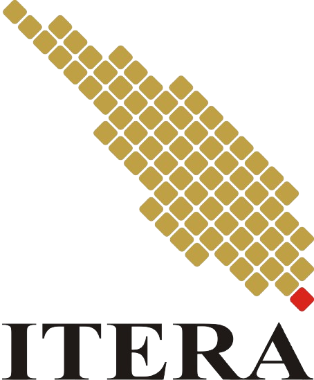

TANAMAN OBAT KELUARGA

kingdom: plantae
divisi: magnoliophyta
kelas: liliopsida
ordo: poales
famili: poaceae
genus: Cymbopogon
spesies: Cymbopogon citratus (DC.) Stapf.
Mengobati Anemia
Mengatasi Masuk Angin dan Perut Kembung
Meredakan Nyeri Menstruasi
Membantu Penurunan Berat Badan
Mengatasi Bekas Jerawat